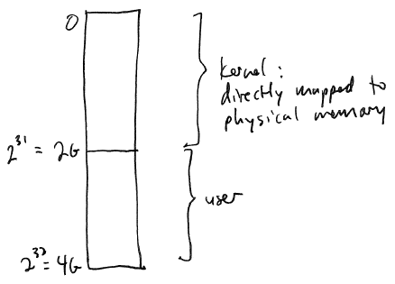
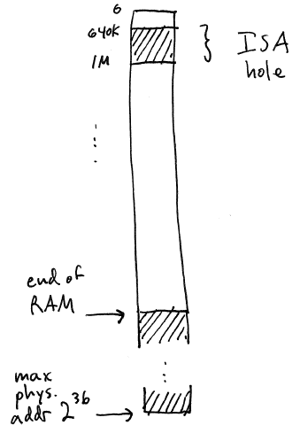

The kernel must have a private address space that is not accessible
by user processes.
But: the kernel must be able to access user space memory in order to
copy data between user buffers and kernel data structures.
How can we allow the kernel to access user memory, but prevent user
processes from accessing kernel memory?
Many possible solutions:
1. Separate address spaces. The
kernel has its own address space (page directory + page tables).
In order for the kernel to access user memory, it must create a
temporary mapping of the frame into its own address space.
Advantages: both kernel and user process
have entirely disjoint address spaces, so they can each fully utilize
the entire address space.
Disadvantages: User/kernel mode switches
require an address space switch: This may require a complete TLB
flush. Also, there is some overhead associated with creating and
removing temporary mappings.
2. Part or all of the kernel address
space is mapped into each user address space, and page level protection
is used to keep user processes from accessing kernel memory.
Advantages: User->kernel mode switch
NEVER requires an address space switch. Kernel->user mode
switch only requres an address space switch if a new process (address
space) is being selected. Copyin/copyout is just a direct
memory/memory copy.
Disadvantages: The range of virtual
addresses used by the kernel cannot be used by user processes.
Depending on how much of the kernel space is mapped into each user
address space, this can remove a sizable chunk of the user address
space.
GeekOS:
Low 2GB of each user address space is
devoted to the kernel. This region is a direct mapping of physical
addresses, because each virtual address corresponds exactly to a
physical address. This makes bootstrapping easier, and also
allows GeekOS to directly access all physical memory (up to 2GB).
Upper 2GB of each address space is
devoted to user space.

When the OS kernel boots, it takes an inventory of physical memory
to find out how much RAM (main memory) is available.
Example: on an x86 PC, physical memory is organized like this:

Note that physical addresses between 640K and 1M are labeled as the
"ISA hole". This region exists as a legacy from the original IBM
PC, which used a bus called "ISA" to connect peripherals. The ISA
hole is a range of physical addresses in which memory mapped I/O
devices and ROM are connected. For example, the video memory used
by the VGA card is mapped in this region. The OS must be aware
that this range of the physical address space does not contain RAM.
Once the OS kernel has determined the configuration of physical
memory, it creates data structures to allow allocation and freeing of
physical frames of memory.
A typical strategy is to associate a small data structure with each
frame of physical memory. In GeekOS, this is struct Page. The Page struct
is used to keep track of
Link fields (ptr to next Page, ptr to
previous Page) so that Page structs can be stored in a linked list
Meta-information about the corresponding
frame, such as whether or not the frame has been allocated
If the frame is mapped into an address
space, which address space and where in the address space it is mapped
How recently the frame was referenced
In GeekOS, the array of Page data structures is referred to by the s_pageList pointer variable in src/geekos/mem.c.
The OS kernel needs to allocate
frames to map into user address spaces. A frame is allocated
using the Alloc_Page()
function.
When a frame is no longer needed by any address space (for example,
when a process exits), the frame can be freed using the Free_Page() function. It is
important to be able to allocate and free frames quickly, so GeekOS
uses a freelist to store the
Page structs corresponding to all available frames of memory. Alloc_Page() works by removing a
frame from the freelist, marking it as allocated, and returning a
pointer to the physical address of the corresponding frame. Free_Page() works by finding the
Page struct corresponding to the frame being freed, marking it as
available, and retuning it to the freelist. This is a simple and
effective strategy, and most OS kernels use some variation of it.
What happens when Alloc_Page()
is called, but the freelist is empty? That is when page stealing
happens.
We have seen that physical frames of memory are allocated as needed
to virtual memory objects. We have also seen that when a page
fault occurs and there are no available memory frames, then the
operating system may need to steal a frame currently allocated to some
VM object. When a page fault causes a frame to be stolen:
If dirty, its data are paged out using
the pageout method of the VM object from which the frame was stolen
The frame is unmapped from any address
space (page tables) currently mapping it
The data for the faulting page is copied
into the frame using the pagein method of the VM object backing the
region where the page fault occurred
The frame is mapped into the address
space (page tables) of the faulting process
In this way, physical frames of memory bounce around between VM
objects and address spaces as needed. Because this all happens
transparently as far as the user processes are concerned, it creates
the illusion of virtual memory:
processes can use more memory in their address space than is physically
installed in the computer.
We have seen that the most common persistent backing store used by
VM objects is the hard drive. The backing store is where data
belonging to pages that are not currently in a physical frame of memory
are stored. Examples of VM objects that use disk as their backing
store are swap-backed VM objects (used for things like heap memory,
stack memory, and anonymous shared memory), and also ordinary disk
files in the filesystem.
More exotic backing stores are possible: for example, it is
conceivable that a VM object could use storage space on a network
server as its backing store.
The important thing to understand here is that
disks are VERY, VERY slow compared to the
CPU and RAM
For example, a typical disk seek might take 5 ms. Assuming a 3
GHz CPU, during those 5 ms the CPU can execute 15,000,000 clock
cycles. That's a lot of instructions.
So, even though using disk space as virtual memory works and is
transparent to processes, it is far, far slower than physical
memory. If a process causes a page fault on each instruction or
memory reference that requires disk I/O to service, the slowdown factor
is likely to be in the hundreds of thousands or millions. In
other words, a program that would ordinarily complete in 1 second might
take 27 days to finish (100,000 times slowdown) if every memory
reference causes a page fault.
The slowness of disks means that the OS should try as hard as it can
to make sure that page faults are infrequent once a process has
established its working set.
A process's working set is the set of pages that are referenced
recently.
There is one important question in a virtual memory system: when a
frame is required but no unused frame is available, which frame should
the OS kernel steal? The answer to this question defines the OS
kernel's page replacement
algorithm.
Ideal algorithm:
Steal the page that will not be
referenced again for the longest period of time.
This is provably optimal. Of course, it cannot be implemented
in practice because it requires knowledge of the future. So, the
OS kernel must try to predict future memory references based on the
process's past behavior. (This should remind you of process
scheduling.)
Abstractly, we can define the problem of page replacement this way:
A process, over its lifetime, will
generate a series of memory references. From this series of
memory references we can extract a series of page references. (An
uninterrupted sequence of addresses falling within a single page can be
condensed into a single page reference.)
The series of page refererences over the
lifetime of a process is the page
reference string.
We can evaluate different page replacement algorithms by considering
how many page faults will occur for a given reference string and a
fixed number of frames of memory.
Following the examples in Silberschatz, ch 9, we will consider the
reference string
7 0 1 2 0 3 0 4 2 3 0 3 2 1 2 0 1 7 0 1
with 3 frames of physical memory.
Critical
Point to Understand: When evaluating page replacement
algorithms, it is crucial to understand that they are better and worse
than other algorithms for a given kind of workload. Or, in other
words, one algorithm may work well for one kind of workload, but
perform poorly on another kind of workload.
That means that there is no "best" page
replacement algorithm for all workloads. We cross our fingers and
hope that we will choose a algorithm that works well for "typical"
workloads.
Steal the frame containing the page that was paged in earlier than
those in all other frames.
Not so great if there are frames that are brought in early and used
frequently for long periods.
[Demonstrate.]